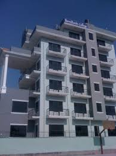

Bachelor's and master's
One of the best preffered college in Nepal.

Nepal

Kathmandu

Kathmandu Bernhardt College has been the greatest college of all time for the milestone of quality education in western
part of kathmandu valley since 2060 BS.
Well its is also the first QAA certified private college among the Tribhuwan University
(TU) Affiliates.
One of the best preffered college in Nepal.
*Well equipped computer lab and library.
*Club based extra curricular activities.
*Research,seminar and presentation based classes.
*Internship,Educational tour.
*Hygienic and well-managed cafeteria.
*Communication skills and leadership development programs.

In college, library we can find different type of academic books,newspaper, magazines,novels,etc.are avaliable for the students to study.An important part of academic sides. Well managed book shelves,table and chair for the sutdents to study.
Games and sports are as essential as studies. They provide the much desired change in the dull academic life of the college. Being involved in sports teaches you various interpersonal skills such as patience, communication, leadership, punctuality, accountability, teamwork, trust, and others which will help you not only to win a particular sports competition but also grow and achieve success in life.

The necessity of a college canteen (cafeteria) is to serve food and drink to the students, teachers and other employees. Its importance is really great. We are lucky that we have a very good canteen in our college which is housed in a separate building. We can get refreshments here. The canteen opens daily with the beginning of the normal works of the college and closes in the evening. In a canteen, there are chairs and tables. A college canteen is indeed very useful for students.